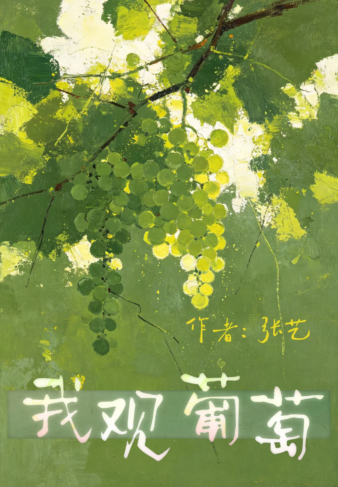
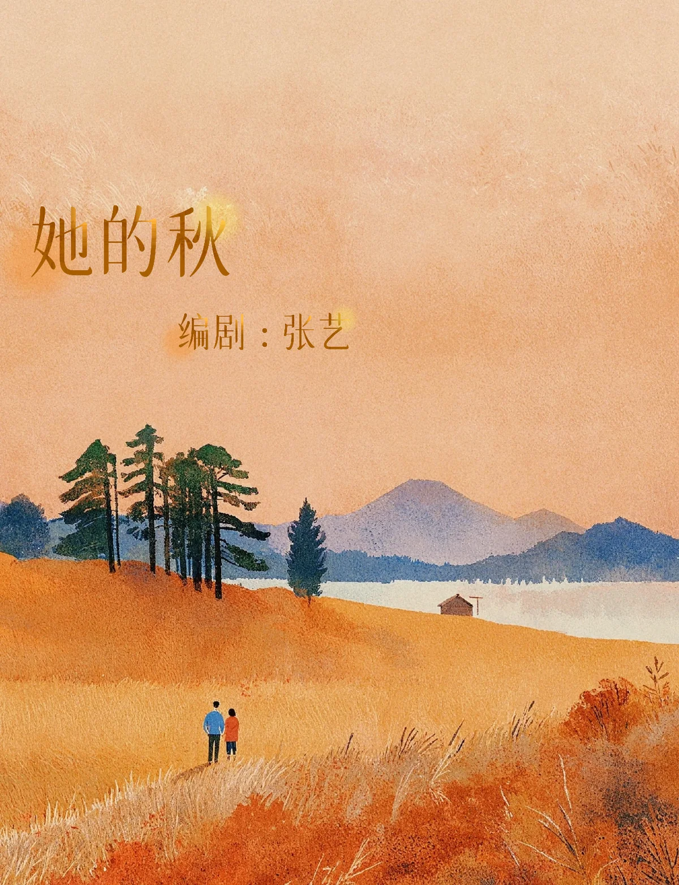
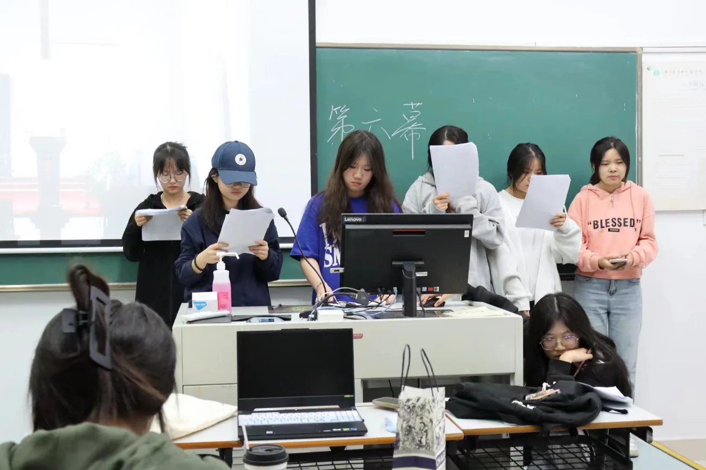
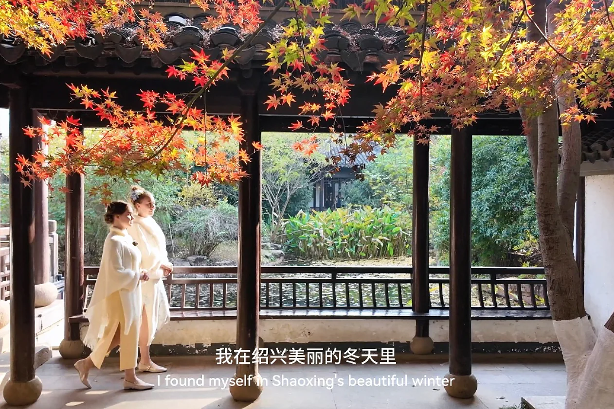
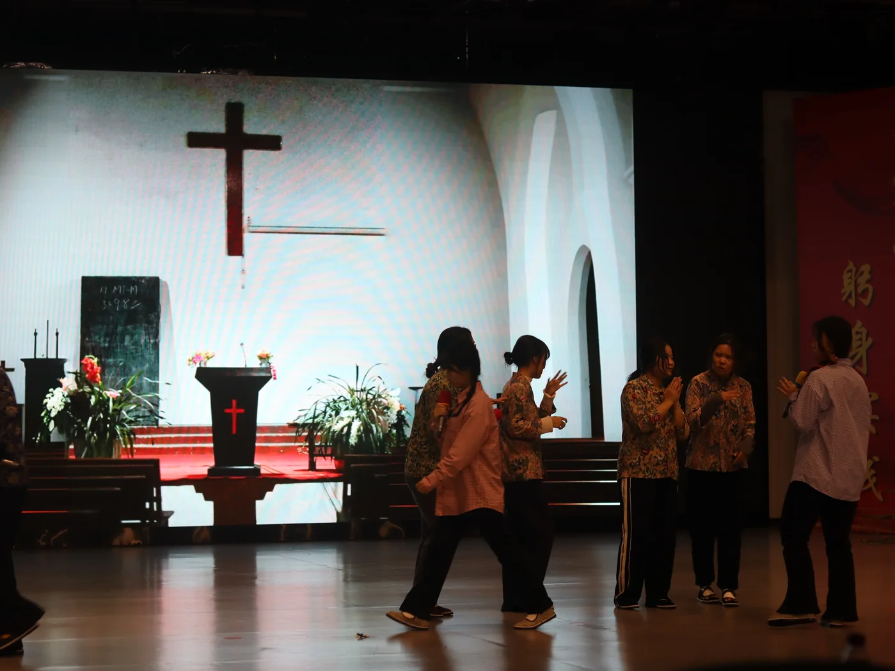
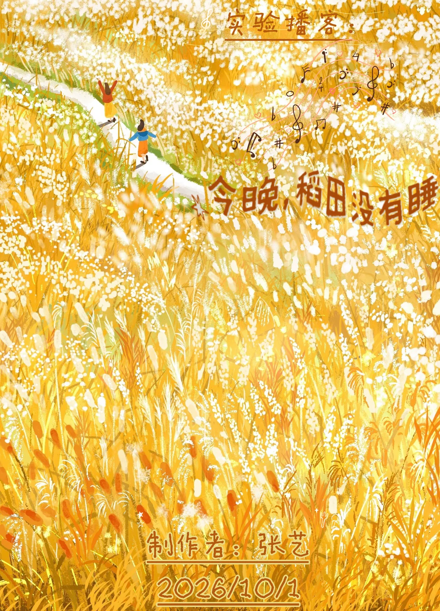

阅读
阅读浙江 · 绍兴
向下浏览关于
先认识一下。
一个在文字、影像、声音与舞台之间
来回走的人。
我叫张艺，浙江越秀外国语学院戏剧影视文学专业。
我喜欢从很小的东西开始：一段没说完的话、下午四点的光、水烧开前的声音。它们通常不会成为故事，但会留在故事里。
这个作品集分成五个房间：剧本、影评、研读札记、声音与展演影像。它们记录我如何写、如何看、如何听见，也如何站在光里。
原来安静并不是没有声音，
有的时候，是我们走得太急。 《今晚，稻田没有睡》



02
原创剧本
把故事写在纸上。
两个剧本。一个关于一张钞票，
一个关于一整个秋天。
03
影评随笔
看过的光，留在身上。
一篇电影评论，一篇获奖随笔。
观看之后，文字留下来。
04
文学与戏剧研读札记
一扇门、一种气味、一座城。
三篇论文，
三次把文本读成可以走进去的空间。
05
声音时间
把耳朵借给日常。
两段声音叙事练习。
关于回家，也关于守岁。
有些东西只留在声音里：稻田里的风、除夕夜的值班室、电话那头热闹又遥远的饭桌。它们不构成事件，却构成一个下午，或者一年里最难忘记的一晚。
这一页没有配乐。你可以慢一点读，也可以戴上耳机，听她们把声音慢慢说完。
文案 / 朗读：张艺 · 建议戴耳机

收听
声音目录
02 则
原来安静并不是没有声音，
有的时候，是我们走得太急。
余音 · 声
你们平安到家，
在家里好好休息就很好啦。
《守岁的电波》· 李玉妈妈
06
展演与影像创作
在灯亮起来之前。
四部影像，一次舞台。
从镜头前到灯光下。
影像
舞台
07 · 致谢
谢谢你看完。
谢谢每一位停下来读一读的人。谢谢老师、朋友和家人，也谢谢那些被我借用了片刻的光、风和水声。它们让这些文字有了可以停靠的地方。
作品还会继续长出来。
张艺
戏文 2301 · 二〇二六 · 秋
字体：霞鹜文楷 / 宋体 · 纸色：青灰 · 二〇二六 · 秋 · 浙江绍兴